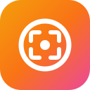
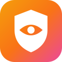

A · 瞳 · 取景框
虹膜外环 = AI 之眼；中央检测框四角括号 + 瞳点 = 目标被锁定。「检测框锁进瞳孔」一步讲清产品是干什么的，AI 与视觉检测两个卖点都在。
推荐：主图标首选 · 语义最完整浅底
深底
B · 光圈虹膜
相机镜头光圈 6 叶片 + 虹膜外环：Iris 双关的工业表达——既是「虹膜」（AI 之眼）也是「光圈」（工业相机）。中心六边形孔透出渐变即瞳孔。
推荐：偏硬件/相机语境 · 工业味最浓浅底
深底
C · 鸢尾绽放
Iris 的第二含义 = 鸢尾花。三片几何花瓣围绕中心瞳点放射，「智能从瞳孔中绽放」；瓣间三点呼应 AI 节点。六款里唯一非圆主形，品牌差异化最强。
推荐：想要柔和亲和的品牌气质浅底
深底
D · 对话瞳
瞳孔即对话气泡：一句话（气泡）教会 AI（气泡内的神经网络三角）盯现场。Slogan「一句话，教会 AI 盯现场」的直译图形，「自然语言驱动」卖点最强。
推荐：主图标个性选 · 最贴 Slogan浅底
深底

E · 守护之眼
盾牌（防错 / 质量守护）内嵌一只睁开的眼：眼洞挖空透出渐变作眼白，中央白瞳点 = AI 注视。工业防护感最强，直指「防错」定位。
推荐：强调防错/质量守护场景浅底
深底
F · 检测框之瞳
一个巨大的 bounding box 四角括号锁住中心瞳环。全场最简几何（4 条折线 + 1 个环），小尺寸辨识度最高——「检测框锁定目标」即产品核心动作。
推荐：极简风 · 最耐小尺寸浅底
深底